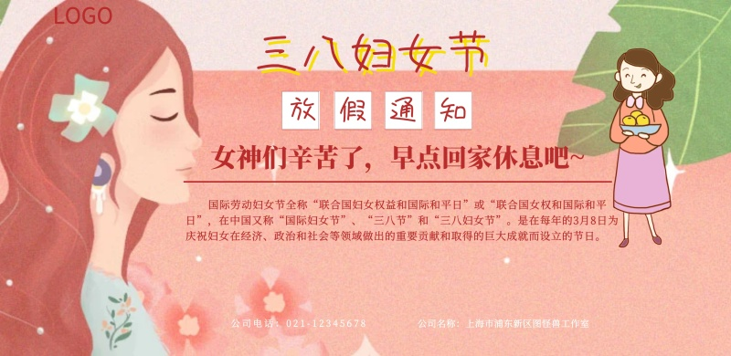

妈妈节日快乐
辛劳一辈子的您虽已银发如雪，可您在我心目中仍是那么的青春靓丽！妈妈，祝您永远年轻快乐！！！我的美好祝福浓得化不开；我的美好祝福深得抹不去；我的 美好祝福只献给你---我最亲最爱的母亲！ 母亲:长满老茧的双手有我快乐的童年;斑白的双鬓有我成长的足迹!远方的母亲，你是我唯一的牵挂!新年来临，恭祝事事顺心!身体健康! 妈妈节日快乐!你的深思啊无法报答.只有灿烂的笑在漫漫的长路上作出回答 ！ 捋开额前的细发，便可以惊见星星点点银丝，孩子，是我的青春转嫁到了你的身上么? 妈妈，感谢您多年的艰辛哺育，使我长大，使我成才！ 一年又一年，风风雨雨。您为了我们呕心沥血，请接受我们对您深深感谢和炙热的爱。轻轻一声问安，将我心中的祝福化作阳光般的温暖，永恒地留在您眼中、您心中。 您的付出、您的祈盼，只为我们的成长。谢谢您，妈妈。 妈妈，您的怀抱最温暖。无论我走多远，心中永远眷恋您。 妈妈，我想对您说，话到嘴边又咽了；妈妈，我想对您笑，眼里却点点泪花。虽然您不轻易表露，但我知道您一直都在关心着我。谢谢您，妈妈! 我是从故乡屋檐下飞出的一只小鸟，每一根羽毛成长都凝结着您的深情抚爱和谆谆教导。把无数的思念化做心中无限的祝福，默默的为你祈祷，祝你健康快乐！ 亲情总是让生活充溢着一份份平平常常却恒久的温暖，亲情是贯穿生命始终的依伴。 您是一棵大树，春天倚着您幻想，夏天倚着你繁茂，秋天倚着您成熟，冬天倚着您沉思。 欢乐就是健康。如果我的祝福能为您带来健康的源泉，我愿日夜为您祈祷. 妈妈，很久了，一直想对您说：“我爱您！”，您听见了吗？在今天这属于您的日子里，恭祝您平安如愿 。岁月已将您们的青春燃烧，但您们的关怀和勉励将伴我信步风雨人生。 妈妈，给您我的全部的爱，您是我今生唯一的祝福。收集每一种愿望，每一个企盼，寄予您深切的关怀。您是给我以生命并抚育我成长的土地，我深深地爱着您。 一切过去了的都会变成亲切的怀念，一切逝去了的方知可贵。我怀念您带我们走过的时光。母爱原来是一种酒，饮了就化作思念。 历经风雨洗礼，盼您始终坚强如昔。我把思念化为祝福，伴随您三百六十五天。 在这样的季节，把我的真挚的祝福捎给您，愿幸福常在您身边。 妈妈，祝您健康长寿！您的爱是崇高的爱，只是给予，不求索取，不溯既往，不讨恩情。“满目清山夕照明”愿您老晚年幸福，健康长寿！ 妈妈，我曾是您身边的一只备受关怀的小鸟，今天它为您衔来了一束芬芳的鲜花。 妈妈，不论您在哪儿，那里就是我们最快乐和向往的地方。 妈妈，谢谢您，是您给了我生命。 您常在给我理解的注视，您常说快乐是孩子的礼物。所以今天，我送上一个笑，温暖您的心。用我心抚平您额上的皱纹，用我的情感染黑您头上的白发。 走过了那么多年，我才深深知道，最爱我的人是您，妈妈。 您生命的秋天，是枫叶一般的色彩，不是春光胜似春光，时值霜天季节，却格外显得神采奕奕。 是您指引我走出第一步，帮助我找到以后的路，谢谢您，妈妈！ 愿将我的怀念和祝福，在此安谧的节日，默默送给您。 眷恋如无边的海洋，一次又一次起伏的浪，想起您，多好。 所有的思念，更融合着不尽的感激与敬仰，愿您的节日里洋溢着璀璨、平安。妈妈，我从灵魂深处爱您，我愿意把生命交给您，由您接受多少就多少，当初是这样，现在也决不变更。 妈妈，现在我已长大，不再牵着您的衣襟，走过春秋冬夏。没有您就没有我，就没有我数十寒暑的悲伤，也没有我春夏秋冬的欢笑，谢谢您给了我生命中美好的一切与成长。母亲节快乐。 世上只有妈妈好，没有天就没有地，没有您就没有我，谢谢您给我带来的一切一切。您的爱，我永远报答不了；您对我多年以来的默默支持，是我积极向上的精神支柱。妈妈，我爱您。 这世界上，没有人比您更爱我；这世界上，也没有人能取代您在我心里的位置。妈妈，无论在哪里，我永远爱您。 从没有为您写过什么，也没有给您说过什么感谢的话，但您对我的关心和爱意，点点滴滴都在心头。妈妈，谢谢您给予我如此灿烂美好的生命！I love you forever。 吃遍天下盐最好，走遍天下娘最亲。世界上能够让我献出生命的只有您，我的妈妈。我将爱您一生！